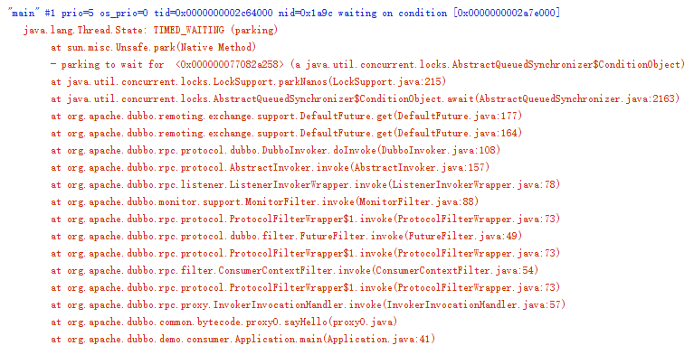

- 00 学习攻略 如何才能学好并发编程？.md.html
- 00 开篇词 你为什么需要学习并发编程？.md.html
- 01 可见性、原子性和有序性问题：并发编程Bug的源头.md.html
- 02 Java内存模型：看Java如何解决可见性和有序性问题.md.html
- 03 互斥锁（上）：解决原子性问题.md.html
- 04 互斥锁（下）：如何用一把锁保护多个资源？.md.html
- 05 一不小心就死锁了，怎么办？.md.html
- 06 用“等待-通知”机制优化循环等待.md.html
- 07 安全性、活跃性以及性能问题.md.html
- 08 管程：并发编程的万能钥匙.md.html
- 09 Java线程（上）：Java线程的生命周期.md.html
- 10 Java线程（中）：创建多少线程才是合适的？.md.html
- 11 Java线程（下）：为什么局部变量是线程安全的？.md.html
- 12 如何用面向对象思想写好并发程序？.md.html
- 13 理论基础模块热点问题答疑.md.html
- 14 Lock和Condition（上）：隐藏在并发包中的管程.md.html
- 15 Lock和Condition（下）：Dubbo如何用管程实现异步转同步？.md.html
- 16 Semaphore：如何快速实现一个限流器？.md.html
- 17 ReadWriteLock：如何快速实现一个完备的缓存？.md.html
- 18 StampedLock：有没有比读写锁更快的锁？.md.html
- 19 CountDownLatch和CyclicBarrier：如何让多线程步调一致？.md.html
- 20 并发容器：都有哪些“坑”需要我们填？.md.html
- 21 原子类：无锁工具类的典范.md.html
- 22 Executor与线程池：如何创建正确的线程池？.md.html
- 23 Future：如何用多线程实现最优的“烧水泡茶”程序？.md.html
- 24 CompletableFuture：异步编程没那么难.md.html
- 25 CompletionService：如何批量执行异步任务？.md.html
- 26 Fork_Join：单机版的MapReduce.md.html
- 27 并发工具类模块热点问题答疑.md.html
- 28 Immutability模式：如何利用不变性解决并发问题？.md.html
- 29 Copy-on-Write模式：不是延时策略的COW.md.html
- 3 个用户来信 打开一个新的并发世界.md.html
- 30 线程本地存储模式：没有共享，就没有伤害.md.html
- 31 Guarded Suspension模式：等待唤醒机制的规范实现.md.html
- 32 Balking模式：再谈线程安全的单例模式.md.html
- 33 Thread-Per-Message模式：最简单实用的分工方法.md.html
- 34 Worker Thread模式：如何避免重复创建线程？.md.html
- 35 两阶段终止模式：如何优雅地终止线程？.md.html
- 36 生产者-消费者模式：用流水线思想提高效率.md.html
- 37 设计模式模块热点问题答疑.md.html
- 38 案例分析（一）：高性能限流器Guava RateLimiter.md.html
- 39 案例分析（二）：高性能网络应用框架Netty.md.html
- 40 案例分析（三）：高性能队列Disruptor.md.html
- 41 案例分析（四）：高性能数据库连接池HiKariCP.md.html
- 42 Actor模型：面向对象原生的并发模型.md.html
- 43 软件事务内存：借鉴数据库的并发经验.md.html
- 44 协程：更轻量级的线程.md.html
- 45 CSP模型：Golang的主力队员.md.html
- 用户来信 真好，面试考到这些并发编程，我都答对了！.md.html
- 结束语 十年之后，初心依旧.md.html
- 捐赠
15 Lock和Condition（下）：Dubbo如何用管程实现异步转同步？
在上一篇文章中，我们讲到Java SDK并发包里的Lock有别于synchronized隐式锁的三个特性：能够响应中断、支持超时和非阻塞地获取锁。那今天我们接着再来详细聊聊Java SDK并发包里的Condition，Condition实现了管程模型里面的条件变量。
在《08 | 管程：并发编程的万能钥匙》里我们提到过Java 语言内置的管程里只有一个条件变量，而Lock&Condition实现的管程是支持多个条件变量的，这是二者的一个重要区别。
在很多并发场景下，支持多个条件变量能够让我们的并发程序可读性更好，实现起来也更容易。例如，实现一个阻塞队列，就需要两个条件变量。
那如何利用两个条件变量快速实现阻塞队列呢？
一个阻塞队列，需要两个条件变量，一个是队列不空（空队列不允许出队），另一个是队列不满（队列已满不允许入队），这个例子我们前面在介绍管程的时候详细说过，这里就不再赘述。相关的代码，我这里重新列了出来，你可以温故知新一下。
public class BlockedQueue<T>{
final Lock lock =
new ReentrantLock();
// 条件变量：队列不满
final Condition notFull =
lock.newCondition();
// 条件变量：队列不空
final Condition notEmpty =
lock.newCondition();
// 入队
void enq(T x) {
lock.lock();
try {
while (队列已满){
// 等待队列不满
notFull.await();
}
// 省略入队操作...
//入队后,通知可出队
notEmpty.signal();
}finally {
lock.unlock();
}
}
// 出队
void deq(){
lock.lock();
try {
while (队列已空){
// 等待队列不空
notEmpty.await();
}
// 省略出队操作...
//出队后，通知可入队
notFull.signal();
}finally {
lock.unlock();
}
}
}
不过，这里你需要注意，Lock和Condition实现的管程，线程等待和通知需要调用await()、signal()、signalAll()，它们的语义和wait()、notify()、notifyAll()是相同的。但是不一样的是，Lock&Condition实现的管程里只能使用前面的await()、signal()、signalAll()，而后面的wait()、notify()、notifyAll()只有在synchronized实现的管程里才能使用。如果一不小心在Lock&Condition实现的管程里调用了wait()、notify()、notifyAll()，那程序可就彻底玩儿完了。
Java SDK并发包里的Lock和Condition不过就是管程的一种实现而已，管程你已经很熟悉了，那Lock和Condition的使用自然是小菜一碟。下面我们就来看看在知名项目Dubbo中，Lock和Condition是怎么用的。不过在开始介绍源码之前，我还先要介绍两个概念：同步和异步。
同步与异步
我们平时写的代码，基本都是同步的。但最近几年，异步编程大火。那同步和异步的区别到底是什么呢？通俗点来讲就是调用方是否需要等待结果，如果需要等待结果，就是同步；如果不需要等待结果，就是异步。
比如在下面的代码里，有一个计算圆周率小数点后100万位的方法pai1M()，这个方法可能需要执行俩礼拜，如果调用pai1M()之后，线程一直等着计算结果，等俩礼拜之后结果返回，就可以执行 printf("hello world")了，这个属于同步；如果调用pai1M()之后，线程不用等待计算结果，立刻就可以执行 printf("hello world")，这个就属于异步。
// 计算圆周率小说点后100万位
String pai1M() {
//省略代码无数
}
pai1M()
printf("hello world")
同步，是Java代码默认的处理方式。如果你想让你的程序支持异步，可以通过下面两种方式来实现：
- 调用方创建一个子线程，在子线程中执行方法调用，这种调用我们称为异步调用；
- 方法实现的时候，创建一个新的线程执行主要逻辑，主线程直接return，这种方法我们一般称为异步方法。
Dubbo源码分析
其实在编程领域，异步的场景还是挺多的，比如TCP协议本身就是异步的，我们工作中经常用到的RPC调用，在TCP协议层面，发送完RPC请求后，线程是不会等待RPC的响应结果的。可能你会觉得奇怪，平时工作中的RPC调用大多数都是同步的啊？这是怎么回事呢？
其实很简单，一定是有人帮你做了异步转同步的事情。例如目前知名的RPC框架Dubbo就给我们做了异步转同步的事情，那它是怎么做的呢？下面我们就来分析一下Dubbo的相关源码。
对于下面一个简单的RPC调用，默认情况下sayHello()方法，是个同步方法，也就是说，执行service.sayHello(“dubbo”)的时候，线程会停下来等结果。
DemoService service = 初始化部分省略
String message =
service.sayHello("dubbo");
System.out.println(message);
如果此时你将调用线程dump出来的话，会是下图这个样子，你会发现调用线程阻塞了，线程状态是TIMED_WAITING。本来发送请求是异步的，但是调用线程却阻塞了，说明Dubbo帮我们做了异步转同步的事情。通过调用栈，你能看到线程是阻塞在DefaultFuture.get()方法上，所以可以推断：Dubbo异步转同步的功能应该是通过DefaultFuture这个类实现的。

调用栈信息
不过为了理清前后关系，还是有必要分析一下调用DefaultFuture.get()之前发生了什么。DubboInvoker的108行调用了DefaultFuture.get()，这一行很关键，我稍微修改了一下列在了下面。这一行先调用了request(inv, timeout)方法，这个方法其实就是发送RPC请求，之后通过调用get()方法等待RPC返回结果。
public class DubboInvoker{
Result doInvoke(Invocation inv){
// 下面这行就是源码中108行
// 为了便于展示，做了修改
return currentClient
.request(inv, timeout)
.get();
}
}
DefaultFuture这个类是很关键，我把相关的代码精简之后，列到了下面。不过在看代码之前，你还是有必要重复一下我们的需求：当RPC返回结果之前，阻塞调用线程，让调用线程等待；当RPC返回结果后，唤醒调用线程，让调用线程重新执行。不知道你有没有似曾相识的感觉，这不就是经典的等待-通知机制吗？这个时候想必你的脑海里应该能够浮现出管程的解决方案了。有了自己的方案之后，我们再来看看Dubbo是怎么实现的。
// 创建锁与条件变量
private final Lock lock
= new ReentrantLock();
private final Condition done
= lock.newCondition();
// 调用方通过该方法等待结果
Object get(int timeout){
long start = System.nanoTime();
lock.lock();
try {
while (!isDone()) {
done.await(timeout);
long cur=System.nanoTime();
if (isDone() ||
cur-start > timeout){
break;
}
}
} finally {
lock.unlock();
}
if (!isDone()) {
throw new TimeoutException();
}
return returnFromResponse();
}
// RPC结果是否已经返回
boolean isDone() {
return response != null;
}
// RPC结果返回时调用该方法
private void doReceived(Response res) {
lock.lock();
try {
response = res;
if (done != null) {
done.signal();
}
} finally {
lock.unlock();
}
}
调用线程通过调用get()方法等待RPC返回结果，这个方法里面，你看到的都是熟悉的“面孔”：调用lock()获取锁，在finally里面调用unlock()释放锁；获取锁后，通过经典的在循环中调用await()方法来实现等待。
当RPC结果返回时，会调用doReceived()方法，这个方法里面，调用lock()获取锁，在finally里面调用unlock()释放锁，获取锁后通过调用signal()来通知调用线程，结果已经返回，不用继续等待了。
至此，Dubbo里面的异步转同步的源码就分析完了，有没有觉得还挺简单的？最近这几年，工作中需要异步处理的越来越多了，其中有一个主要原因就是有些API本身就是异步API。例如websocket也是一个异步的通信协议，如果基于这个协议实现一个简单的RPC，你也会遇到异步转同步的问题。现在很多公有云的API本身也是异步的，例如创建云主机，就是一个异步的API，调用虽然成功了，但是云主机并没有创建成功，你需要调用另外一个API去轮询云主机的状态。如果你需要在项目内部封装创建云主机的API，你也会面临异步转同步的问题，因为同步的API更易用。
总结
Lock&Condition是管程的一种实现，所以能否用好Lock和Condition要看你对管程模型理解得怎么样。管程的技术前面我们已经专门用了一篇文章做了介绍，你可以结合着来学，理论联系实践，有助于加深理解。
Lock&Condition实现的管程相对于synchronized实现的管程来说更加灵活、功能也更丰富。
结合我自己的经验，我认为了解原理比了解实现更能让你快速学好并发编程，所以没有介绍太多Java SDK并发包里锁和条件变量是如何实现的。但如果你对实现感兴趣，可以参考《Java并发编程的艺术》一书的第5章《Java中的锁》，里面详细介绍了实现原理，我觉得写得非常好。
另外，专栏里对DefaultFuture的代码缩减了很多，如果你感兴趣，也可以去看看完整版。- Dubbo的源代码在Github上，DefaultFuture的路径是：incubator-dubbo/dubbo-remoting/dubbo-remoting-api/src/main/java/org/apache/dubbo/remoting/exchange/support/DefaultFuture.java。
课后思考
DefaultFuture里面唤醒等待的线程，用的是signal()，而不是signalAll()，你来分析一下，这样做是否合理呢？
欢迎在留言区与我分享你的想法，也欢迎你在留言区记录你的思考过程。感谢阅读，如果你觉得这篇文章对你有帮助的话，也欢迎把它分享给更多的朋友。
© 2019 - 2023 Liangliang Lee. Powered by gin and hexo-theme-book.